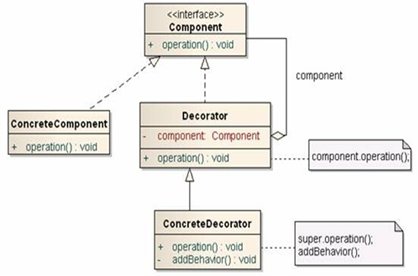
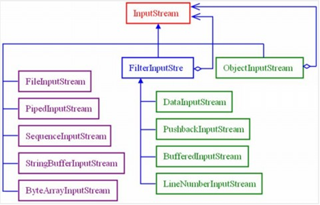

分析：建议挑选有一定技术难度，并且在实际开发中应用较多的设计模式。可以挑选装饰模式和动态代理模式。此处挑选动态代理设计模式。
讲解思路：生活案例引入、技术讲解、优缺点分析、典型应用。
1、生活案例引入：送生日蛋糕：
MM们要过生日了，怎么也得表示下吧。最起码先送个蛋糕。蛋糕多种多样了。巧克力，冰淇淋，奶油等等。这都是基本的了，再加点额外的装饰，如蛋糕里放点花、放贺卡、放点干果吃着更香等等。
分析：
方案1:如果采用继承会造成大量的蛋糕子类
方案2、蛋糕作为主体，花，贺卡，果仁等是装饰者，需要时加到蛋糕上。要啥我就加啥。
1、 技术讲解
装饰模式（别名Wrapper）是在不必改变原类文件和使用继承的情况下，动态的扩展一个对象的功能。它通过创建一个包装对象，也就是装饰来包裹真实对象，提供了比继承更具弹性的代替方案。
装饰模式一般涉及到的角色
l 抽象构建角色(Component):给出一个抽象的接口，以规范准备接受附加责任的对象。
l 具体的构建角色(ConcreteComponent)：定义一个将要接受附加责任的类。
l 抽象的装饰角色 (Decorator):持有一个抽象构建(Component)角色的引用，并定义一个与抽象构件一致的接口。
l 具体的装饰角色(ConcreteDecorator):负责给构建对象“贴上”附加的责任。

3、优缺点分析
优点
1) Decorator模式与继承关系的目的都是要扩展对象的功能，但是Decorato更多的灵活性。
2) 把类中的装饰功能从类中搬移出去，这样可以简化原有的类。有效地把类的核心功能和装饰功能区分开了。
3) 通过使用不同的具体装饰类以及这些装饰类的排列组合，可创造出很多不同行为的组合。
缺点
1) 这种比继承更加灵活机动的特性，也同时意味着更加多的复杂性。
2) 装饰模式会导致设计中出现许多小类，如果过度使用，会使程序变得很复杂。
符合的设计原则：
1) 多用组合，少用继承。利用继承设计子类的行为是在编译时静态决定的，且所有的子类都会继承到相同的行为。如能够利用组合扩展对象的行为，就可在运行时动态进行扩展。
2) 类应设计的对扩展开放，对修改关闭。
4、典型应用
java IO中需要完成对不同输入输出源的操作，如果单纯的使用继承这一方式，无疑需要很多的类。比如说，我们操作文件需要一个类，实现文件的字节读取需要一个类，实现文件的字符读取又需要一个类....一次类推每个特定的操作都需要一个特定的类。这无疑会导致大量的IO继承类的出现。显然对于编程是很不利的。
而是用装饰模式则可以很好的解决这一问题，在装饰模式中：节点流（如FileInputStream）直接与输入源交互，之后通过过滤流（FilterInputStream）进行装饰，这样获得的io对象便具有某几个的功能，很好的拓展了IO的功能。
